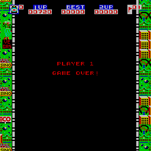

My MAME Driver for Mad Alien
The Game Mad Alien
The arcade game "Mad Alien" was made in 1980 by Data East Corporation (DECO). It is kind of a combination of a shooter and a driving game. You drive a car equipped with a gun on a road. The landscape around you shows different settings (cities, country side, tunnels) and scrolls by from the top to the bottom of the screen. Your enimies (mad aliens) drive in front of you in a galaxian-like formation and you have to shoot them. Watch out for mad aliens leaving the group and turning back to attack your car.Sometimes the road narrows which makes it difficult to dodge the mad aliens. Later in the game obstacle cars appear. They try to ram you, and you can destroy them by shooting their tires. From time to time you enter a tunnel. There it gets dark and you cannot see the attacking enemies until they come within range of your headlight.
The Mad Alien machine had kind of a mini cabinet, which was rather uncommon for an arcade game. After the release of the dedicated Mad Alien machine, DECO made also a version of Mad Alien for their Cassette System.
My MAME Driver for Mad Alien
On February 18, 2004 I finished my first and preliminary version of a MAME driver for Mad Alien. This is my second driver (Super Tank was the first one). As with Super Tank, it was very hard to find out how things work. On the one hand, this time the reverse-engineering process was easier, because I had schematics for the game, and it uses two 6502 processors - the processor I "grew up" with ;-). On the other hand, the video hardware of Mad Alien is rather strange and much more complicated than in Super Tank. So it took quite a lot longer to make this driver. And I am still not 100% sure if the colors are emulated correctly.I would be very interested in comments from owners of a Mad Alien machine and from people who remember the gameplay and the colors of the game. In my MAME driver the colors appear different from the colors in the game flyer for Mad Alien. One difference is e.g., that the walls in the tunnel are red in my driver, whereas in the flyer they are yellow. Another difference is the shape of the headlight. There is definitely a different shape in the Mad Alien ROMs I have (the shape is "rounder"). The headlight shape on the pictures of the arcade flyer must be from an earlier ROM version or maybe from the version for the DECO Cassette System. Additionally, in the flyer picture all the enemies are visible in the tunnel, but I am rather sure from the schematics, that they are only visible, when they are within range of the headlight (this is also what the game manual says).
Can someone confirm these differences between the flyer and the actual game? Are the colors in my MAME driver correct (see screen shots)? Any feedback on these topics is very much appreciated. Please send me an email.
My next steps will be to clean up all my code, to include changes based on feedback from machine owners and testers, and to submit the driver to the MAME development team.
I got a message from Brian Deuel, who played on the machine in the eighties. He told me that the colors look similar to how he remembers them, even if they are different from the screenshots on the arcade flyer. Thanks a lot, Brian :-)
February 21, 2004: After some cleaning up in the source code I submitted my Mad Alien driver to the MAME team.
March 7, 2004: MAME 0.80 was released, and it contains my Mad Alien driver. Cool :-)
March 21, 2004: I got a note from Andrew Slorach, telling me that the colors of the aliens might be wrong and that sound effects are missing. I checked the schematics again and found out, that there is some additional sound circuitry on the board, which I didn't notice first. Now I have to learn something about discrete sound drivers in MAME, because I want to emulate it properly.
Andrew Slorach also provided some interesting background information:
"Leisure and Allied Industries (LAI) here in Australia made a FULL SIZE dedicated cab for this game
(same as pictured in the flyer). I actually have one myself (complete with marquee and NOS control panel),
but have never been able to find a Mad Alien PCB. Spoke to a former LAI employee once who claims they
assembled these cabs with a semi-official bootleg/copy board from Taiwan.
He recalls it was a dual layer Phoenix style PCB. Not the official DECO crate boardset like Astro Fighter.
He mentioned it had a negative reaction from some players because of it�s implied road violence (odd?),
and most of the boards went back to Taiwan to be converted into some helicopter game."
Thanks a lot, Andrew.
May 14, 2006: A great surprise - I got an email from Guru, the famous ROM dumper. He received Andrew Slorach's
board and dumped its ROMs. He sent them to me together with great photos of the running game and the PCBs.
His ROMs were different from my Mad Alien ROMs, for which I made the MAME driver in 2004. They are from the
almost identical game "Mad Rider" (this name is also printed on Guru's PCBs). I immediately started to work
on a Mad Rider driver for MAME. Of course, it is just an adaption of the Mad Alien driver, as the hardware is
almost the same. I noticed the following differences between the two games:
- Mad Rider has different background graphics (e.g., no Las Vegas pictures, but large cactus images)
- Mad Rider has a bigger program ROM (probably more or different levels)
A strange thing is that the title screen of Mad Rider says "Mad Alien", too.
Unfortunately, on Guru's PCB one of the graphics ROMs (bitplane 0) was exchanged with the corresponding
Mad Alien graphics ROM by some previous owner. But as the graphics of the two games are different, this results
in strange graphics artifacts in the game. In the emulation I mapped graphics bitplane 1 on the same location
as bitplane 0. This makes the artifacts go away, but results in wrong colors. What a pity. This can only
be fixed, when someone provides an original graphics ROM of Mad Rider (ROM chip location on the PCB is
called "mc").
Thanks to Guru for dumping and providing the ROMs and for his valuable help.
May 16, 2006: Bad news today. Guru's board turned out to be the game Highway Chase, which someone tried to convert to Mad Alien. So I am not sure, if this board is really an original game or just an incomplete mix of ROMs of the similar games Mad Alien and Highway Chase. Well, my experimental MAME driver at least emulates this strange board more or less correctly. But I will not continue on it.
The First Mad Alien Screen Shots
Now let's have a look at the first screen shots from my Mad Alien driver (colors might be wrong):The title screen and the "start game" screens:

|
Some screen shots from the running game (outside):

|
More screen shots from the running game (in the tunnel):
The obstacle cars:
Game over:
|  |
The First Screen Shots of a strange Mad Alien / Highway Chase mixture PCB
Here are the first screen shots from my driver of Guru's Highway Chase / Mad Alien mixture board (colors are still completely wrong):Level 1 and tunnel:
More levels: